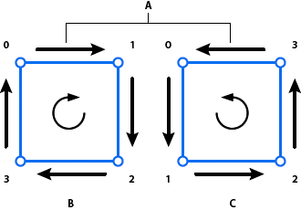
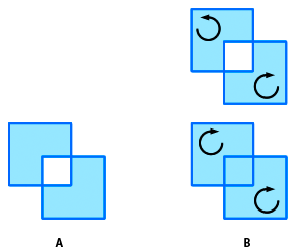
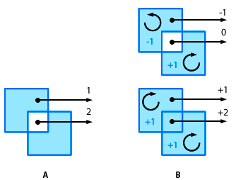
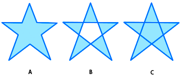

Defining winding rules
The enhanced drawing API also introduces the concept of path “winding”: the direction for a path. The winding for a path is either positive (clockwise) or negative (counter-clockwise). The order in which the renderer interprets the coordinates provided by the vector for the data parameter determines the winding.

Positive and negative winding
A. Arrows indicate drawing direction B. Positively wound (clockwise) C. Negatively wound (counter-clockwise)
Additionally, notice that the Graphics.drawPath() method has an optional third parameter called “winding”:
drawPath (commands:Vector<Int>, data:Vector<Float>, winding:String = GraphicsPathWinding.EVEN_ODD):Void
In this context, the third parameter is a string or a constant that specifies the winding or fill rule for intersecting paths. (The constant values are defined in the GraphicsPathWinding class as GraphicsPathWinding.EVEN_ODD or GraphicsPathWinding.NON_ZERO.) The winding rule is important when paths intersect.
The even-odd rule is the standard winding rule and is the rule used by the legacy drawing API. The even-odd rule is also the default rule for the Graphics.drawPath() method. With the even-odd winding rule, any intersecting paths alternate between open and closed fills. If two squares drawn with the same fill intersect, the area in which the intersection occurs is filled. Generally, adjacent areas are neither both filled nor both unfilled.
The non-zero rule, on the other hand, depends on winding (drawing direction) to determine whether areas defined by intersecting paths are filled. When paths of opposite winding intersect, the area defined is unfilled, much like with even-odd. For paths of the same winding, the area that would be unfilled is filled:

Winding rules for intersecting areas
A. Even-odd winding rule B. Non-zero winding rule
Winding rule names
The names refer to a more specific rule that defines how these fills are managed. Positively wound paths are assigned a value of +1; negatively wound paths are assigned a value of -1. Starting from a point within an enclosed area of a shape, draw a line from that point extending out indefinitely. The number of times that line crosses a path, and the combined values of those paths, are used to determine the fill. For even-odd winding, the count of times the line crosses a path is used. When the count is odd, the area is filled. For even counts, the area is unfilled. For non-zero winding, the values assigned to the paths are used. When the combined values of the path are not 0, the area is filled. When the combined value is 0, the area is unfilled.

Winding rule counts and fills
A. Even-odd winding rule B. Non-zero winding rule
Using winding rules
These fill rules are complicated, but in some situations they are necessary. For example, consider drawing a star shape. With the standard even-odd rule, the shape would require ten different lines. With the non-zero winding rule, those ten lines are reduced to five. Here is the Haxe code for a star with five lines and a non-zero winding rule:
graphics.beginFill (0x60A0FF);
graphics.drawPath (Vector.ofArray ([1,2,2,2,2]), Vector.ofArray ([66, 10, 23, 127, 122, 50, 10, 49, 109, 127.0 ]), GraphicsPathWinding.NON_ZERO);
And here is the star shape:

A star shape using different winding rules
A. Even-odd 10 lines B. Even-odd 5 lines C. Non-zero 5 lines
And, as images are animated or used as textures on three-dimensional objects and overlap, the winding rules become more important.